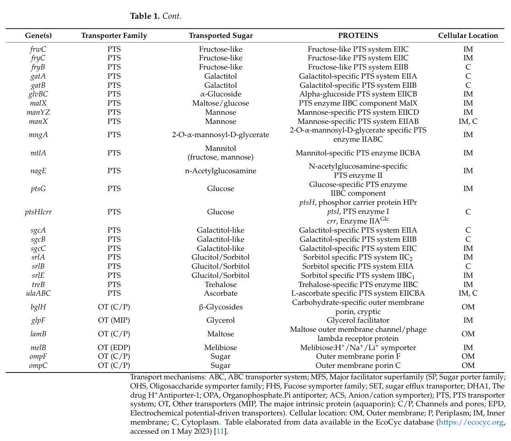

ManZ is the EIID component of the mannose-specific phosphoenolpyruvate-dependent sugar phosphotransferase system (Man-PTS) in E. coli K12. It is an integral inner membrane protein with multiple transmembrane helices that, together with ManY (EIIC), forms the transmembrane translocation channel of the mannose permease. The ManY/ManZ heterodimer assembles as a homotrimer of protomers (PMID:31209249). ManZ contains part of the substrate-binding site. The ManXYZ complex transports mannose, glucose, fructose, and N-acetylglucosamine via PEP-dependent phosphorylation (PMID:2951378, PMID:2999119). The Man-PTS also serves as a receptor for bacteriophage lambda DNA injection (PMID:353494, PMID:2951378) and as a chemoreceptor for sugars (PMID:4604906). ManZ (II-MMan) together with ManY (II-PMan) alone are sufficient for penetration of lambda DNA, while all three subunits (ManX, ManY, ManZ) are required for sugar transport and phosphorylation (PMID:2951378).
| GO Term | Evidence | Action | Reason |
|---|---|---|---|
|
GO:0005886
plasma membrane
|
IBA
GO_REF:0000033 |
ACCEPT |
Summary: ManZ is an integral inner membrane protein of E. coli, experimentally demonstrated by topology analysis (PMID:15919996, PMID:8774730), membrane proteomics (PMID:17309111), and cryo-EM structure (PMID:31209249). The IBA annotation from phylogenetic inference is fully consistent with the experimental data.
Reason: Plasma membrane (inner membrane in E. coli) localization is a core aspect of ManZ function. This is supported by extensive experimental evidence from topology studies and structural determination. The IBA annotation is appropriate.
Supporting Evidence:
PMID:2999119
IIMan, a 27-kDa protein, is the transmembrane component of the complex.
PMID:15919996
we established the periplasmic or cytoplasmic locations of the C termini for 601 inner membrane proteins
file:ECOLI/manZ/manZ-deep-research-falcon.md
ManZ is an **inner (cytoplasmic) membrane** protein in the ManXYZ complex.
|
|
GO:0009401
phosphoenolpyruvate-dependent sugar phosphotransferase system
|
IBA
GO_REF:0000033 |
ACCEPT |
Summary: ManZ is the EIID component of the mannose PTS. The IBA annotation from phylogenetic inference is consistent with experimental demonstration that ManZ is part of the mannose permease of the PEP-dependent PTS (PMID:2951378, PMID:2999119).
Reason: Involvement in the PEP-dependent sugar PTS is the core biological process for ManZ. This is supported by direct experimental evidence from multiple publications.
Supporting Evidence:
PMID:2951378
The mannose permease of the bacterial phosphotransferase system mediates sugar transport across the cytoplasmic membrane concomitant with sugar phosphorylation.
PMID:2999119
The mannose-permease complex of the phosphoenolpyruvate-dependent phosphotranferase system exhibits two apparently unrelated activities.
file:ECOLI/manZ/manZ-deep-research-falcon.md
ManZ is the **EIID** subunit that partners with ManY (EIIC) to form the membrane translocation module. Foundational work describes the PTS chemical steps (phosphate transfer through ManX domains to the sugar at the membrane-embedded IIC module), while positioning ManZ as a critical membrane component that is not a classic phosphoryl-transfer domain but is required for transport and forms part of the **pore/translocation** apparatus.
|
|
GO:0005886
plasma membrane
|
IEA
GO_REF:0000044 |
ACCEPT |
Summary: IEA annotation based on UniProt subcellular location mapping. Duplicates the experimentally supported and IBA annotations for the same term.
Reason: This IEA annotation is redundant with the IBA and multiple IDA annotations for GO:0005886, but it is not incorrect. Plasma membrane localization is well established.
|
|
GO:0009401
phosphoenolpyruvate-dependent sugar phosphotransferase system
|
IEA
GO_REF:0000002 |
ACCEPT |
Summary: IEA annotation inferred from InterPro domain IPR004704 (PTS_IID_man). Duplicates the IBA and IDA annotations for the same term.
Reason: This IEA annotation from InterPro domain mapping is redundant with experimental annotations but is not incorrect. The InterPro domain PTS_IID_man correctly maps to PTS involvement.
|
|
GO:0016020
membrane
|
IEA
GO_REF:0000002 |
ACCEPT |
Summary: IEA annotation from InterPro mapping. GO:0016020 (membrane) is a parent of GO:0005886 (plasma membrane), which is already annotated with experimental evidence.
Reason: While this is less specific than the plasma membrane annotation, it is not incorrect. IEA annotations at broader levels are acceptable when more specific experimental annotations also exist.
|
|
GO:0009401
phosphoenolpyruvate-dependent sugar phosphotransferase system
|
IDA
PMID:2951378 The mannose permease of Escherichia coli consists of three d... |
ACCEPT |
Summary: Erni et al. 1987 determined the complete amino acid sequence of the mannose permease subunits and demonstrated that all three subunits (IIIMan/ManX, II-PMan/ManY, II-MMan/ManZ) are required for sugar transport and phosphorylation via the PTS (PMID:2951378). This is direct experimental evidence for ManZ involvement in the PTS.
Reason: Strong direct experimental evidence from the foundational study characterizing the mannose permease components.
Supporting Evidence:
PMID:2951378
The mannose permease of the bacterial phosphotransferase system mediates sugar transport across the cytoplasmic membrane concomitant with sugar phosphorylation. ...All three subunits are required for sugar transport and phosphorylation
|
|
GO:0015761
mannose transmembrane transport
|
NAS
PMID:2951378 The mannose permease of Escherichia coli consists of three d... |
ACCEPT |
Summary: NAS annotation based on PMID:2951378, which describes the mannose permease and its role in mannose transport. The abstract states the permease "mediates sugar transport across the cytoplasmic membrane" and the system is named the mannose permease.
Reason: Mannose transmembrane transport is a core function of the ManXYZ complex, of which ManZ is the EIID subunit. While the NAS evidence code is weaker, the annotation is well supported by the literature.
Supporting Evidence:
PMID:2951378
The mannose permease of the bacterial phosphotransferase system mediates sugar transport across the cytoplasmic membrane concomitant with sugar phosphorylation.
PMID:2999119
It mediates active transport concomitant with phosphorylation of mannose, 2-deoxyglucose, and a number of other hexoses
file:ECOLI/manZ/manZ-deep-research-falcon.md
It transports mannose as its principal substrate, but multiple sources emphasize it can also transport and/or phosphorylate additional hexoses and amino-sugars.
|
|
GO:0015761
mannose transmembrane transport
|
IDA
PMID:5545083 Sugar transport. II. Characterization of constitutive membra... |
ACCEPT |
Summary: Kundig and Roseman 1971 characterized constitutive membrane-bound enzymes II of the E. coli PTS, including characterization of mannose transport. Only the abstract is available for this early publication.
Reason: Mannose transport is a core function of the Man-PTS. This early characterization study provided foundational evidence. The qualifier in GOA is "acts_upstream_of_or_within" which is appropriate for the older literature where the specific gene product contribution was less precisely defined.
Supporting Evidence:
PMID:5545083
Sugar transport. II. Characterization of constitutive membrane-bound enzymes II of the Escherichia coli phosphotransferase system.
|
|
GO:0015764
N-acetylglucosamine transport
|
EXP
PMID:6252281 Amino-sugar transport systems of Escherichia coli K12. |
KEEP AS NON CORE |
Summary: Jones-Mortimer and Kornberg 1980 demonstrated that N-acetylglucosamine enters E. coli by two distinct PTS systems, one of which is the PtsM (manZ) system (PMID:6252281). This is a secondary transport substrate of the mannose PTS.
Reason: N-acetylglucosamine transport is a genuine but non-core function of the Man-PTS. The primary substrates are mannose and glucose. The ptsM system is one of two PTS systems that can transport N-acetylglucosamine.
Supporting Evidence:
PMID:6252281
N-Acetylglucosamine enters E. coli by two distinct phosphotransferase systems ...One of these is the PtsM system
file:ECOLI/manZ/manZ-deep-research-falcon.md
EcoSal Plus summarizes that ManXYZ transports **mannose** and is “relatively promiscuous,” transporting **glucose**, **2-deoxyglucose**, **N-acetylglucosamine**, **N-acetylmannosamine**, and **galactosamine**.
|
|
GO:0098708
D-glucose import across plasma membrane
|
IDA
PMID:5545083 Sugar transport. II. Characterization of constitutive membra... |
KEEP AS NON CORE |
Summary: Kundig and Roseman 1971 characterized membrane-bound enzymes II of the PTS. The mannose PTS is known to transport glucose (as 2-deoxyglucose) in addition to mannose (PMID:2999119). Glucose import is a secondary but well-established substrate of the Man-PTS.
Reason: Glucose transport via the Man-PTS is well established but is not the primary evolved function of the mannose permease. E. coli has a dedicated glucose PTS (PtsG). The Man-PTS can transport glucose but it is a secondary substrate.
Supporting Evidence:
PMID:2999119
It mediates active transport concomitant with phosphorylation of mannose, 2-deoxyglucose, and a number of other hexoses
|
|
GO:1990539
fructose import across plasma membrane
|
EXP
PMID:4153999 The role of phosphotransferase-mediated syntheses of fructos... |
KEEP AS NON CORE |
Summary: Ferenci and Kornberg 1974 studied the role of PTS-mediated fructose phosphorylation in E. coli growth on fructose. The mannose PTS can transport fructose, but fructose is a secondary substrate and E. coli has a dedicated fructose PTS. Note: the primary citation (PMID:4153999) is only partially cached (title/metadata only; no full text or abstract body), so the substrate confirmation supporting this annotation is drawn from secondary sources (the falcon deep research quoting later functional/regulatory studies). The companion genetic study PMID:4154035 provides independent support for mannose-PTS involvement in fructose utilization.
Reason: Fructose import is a genuine but non-core function of the Man-PTS. E. coli has a dedicated fructose-specific PTS. The Man-PTS can phosphorylate fructose to fructose 6-phosphate as a secondary activity.
Supporting Evidence:
file:ECOLI/manZ/manZ-deep-research-falcon.md
A detailed regulatory/functional study likewise states manXYZ can transport many sugars, including **glucose**, **mannose**, and the amino sugars **glucosamine** and **N-acetylglucosamine**, and also reports transport of **2-deoxyglucose**, **fructose**, and more.
|
|
GO:1990539
fructose import across plasma membrane
|
EXP
PMID:4154035 Genetical analysis of fructose utilization by Escherichia co... |
KEEP AS NON CORE |
Summary: Jones-Mortimer and Kornberg 1974 performed genetical analysis of fructose utilization in E. coli. This provides genetic evidence for the involvement of the mannose PTS in fructose uptake as a secondary activity.
Reason: Duplicate annotation for fructose import with a different reference. Fructose transport is a genuine secondary function of the Man-PTS, not a core function.
|
|
GO:0005886
plasma membrane
|
IDA
PMID:15919996 Global topology analysis of the Escherichia coli inner membr... |
ACCEPT |
Summary: Daley et al. 2005 performed global topology analysis of the E. coli inner membrane proteome using C-terminal GFP/PhoA fusions, establishing the topology and inner membrane localization of 601 proteins including ManZ (PMID:15919996).
Reason: Direct experimental evidence for inner membrane (plasma membrane) localization from a large-scale topology study. This is strong IDA evidence.
Supporting Evidence:
PMID:15919996
we established the periplasmic or cytoplasmic locations of the C termini for 601 inner membrane proteins
|
|
GO:0005886
plasma membrane
|
IDA
PMID:17309111 Comparison of SDS- and methanol-assisted protein solubilizat... |
ACCEPT |
Summary: Zhang et al. 2007 identified ManZ as an integral membrane protein in the inner membrane fraction of E. coli by 2-D LC-MS/MS membrane proteome analysis (PMID:17309111).
Reason: Direct identification of ManZ in the inner membrane proteome fraction. While this is a proteomic detection study rather than a targeted experiment, it provides valid IDA evidence for membrane localization.
Supporting Evidence:
PMID:17309111
Both organic solvent and surfactant have been used for dissolving membrane proteins for shotgun proteomics. ...to dissolve and analyze the inner membrane fraction of an Escherichia coli K12 cell lysate
|
|
GO:0005886
plasma membrane
|
IDA
PMID:2999119 The mannose-permease of the bacterial phosphotransferase sys... |
ACCEPT |
Summary: Erni and Zanolari 1985 purified the IIMan/IIIMan complex and demonstrated that IIMan (ManZ) is the transmembrane component (PMID:2999119).
Reason: Foundational experimental evidence from the original characterization study that ManZ is a transmembrane component localized to the cytoplasmic membrane.
Supporting Evidence:
PMID:2999119
IIMan, a 27-kDa protein, is the transmembrane component of the complex.
|
|
GO:0009401
phosphoenolpyruvate-dependent sugar phosphotransferase system
|
IDA
PMID:2999119 The mannose-permease of the bacterial phosphotransferase sys... |
ACCEPT |
Summary: Erni and Zanolari 1985 cloned the genes and purified the mannose permease complex, demonstrating its function in the PEP-dependent PTS (PMID:2999119).
Reason: Direct experimental evidence from gene cloning and protein purification study demonstrating ManZ role in the PEP-dependent PTS.
Supporting Evidence:
PMID:2999119
The mannose-permease complex of the phosphoenolpyruvate-dependent phosphotranferase system exhibits two apparently unrelated activities. It mediates active transport concomitant with phosphorylation of mannose, 2-deoxyglucose, and a number of other hexoses
|
|
GO:0022870
protein-N(PI)-phosphohistidine-mannose phosphotransferase system transporter activity
|
IDA
PMID:2999119 The mannose-permease of the bacterial phosphotransferase sys... |
ACCEPT |
Summary: GO:0022870 describes the mannose PTS transporter activity, defined as catalysis of PEP-dependent phosphoryl transfer-driven transport of mannose across a membrane. Erni and Zanolari 1985 demonstrated that the purified IIMan/IIIMan complex mediates PEP-dependent mannose transport and phosphorylation (PMID:2999119). Both IIMan and IIIMan are required for phosphorylation of 2-deoxyglucose in vitro.
Reason: This is the most specific and informative molecular function annotation for ManZ. It correctly captures the mannose PTS transporter activity as the core molecular function. Note that this activity is a property of the ManXYZ complex rather than ManZ alone, but ManZ (EIID) is an essential component of the translocation channel.
Supporting Evidence:
PMID:2999119
It mediates active transport concomitant with phosphorylation of mannose, 2-deoxyglucose, and a number of other hexoses ...IIMan and IIIMan are both required for phosphorylation of 2-deoxyglucose in vitro
|
|
GO:0016020
membrane
|
HDA
PMID:16858726 A complexomic study of Escherichia coli using two-dimensiona... |
ACCEPT |
Summary: Lasserre et al. 2006 identified ManZ as part of membrane protein complexes in E. coli using 2-D BN/SDS-PAGE complexomics (PMID:16858726). GO:0016020 (membrane) is less specific than GO:0005886 (plasma membrane).
Reason: This is a valid HDA annotation from a complexomics study. While less specific than the plasma membrane annotations, it is not incorrect and provides independent high-throughput evidence for membrane association.
Supporting Evidence:
PMID:16858726
the cytosolic and membrane protein complexes of Escherichia coli were separated. Then, the different partners of each protein complex were identified by LC-MS/MS.
|
|
GO:1902495
transmembrane transporter complex
|
IPI
PMID:31209249 Structure of the mannose transporter of the bacterial phosph... |
NEW |
Summary: The UniProt record lists GO:1902495 (transmembrane transporter complex) with IPI evidence from ComplexPortal, but this annotation is absent from the GOA file. The cryo-EM structure (PMID:31209249) shows ManZ forms a homotrimer of ManY/ManZ heterodimers, constituting a transmembrane transporter complex.
Reason: ManZ is part of the ManYZ transmembrane transporter complex (CPX-5968 in ComplexPortal). The cryo-EM structure definitively demonstrates this complex architecture. This is a core cellular component annotation that should be present.
Supporting Evidence:
PMID:31209249
we have solved the cryo-EM structure of ManYZ at the inward-facing conformational state. Man-PTS transporters use an elevator mechanism for substrate transportation, in which the substrate-binding Core domain can undergo a rigid-body rotation across the cell membrane.
PMID:31209249
Cartoon representation of the ManYZ structure is shown in two perpendicular views. ... VmotifY and VmotifZ interlocked to form Vmotif domain, whereas CoreY and CoreZ give rise to Core domain.
|
Q: Should ManZ have a dedicated GO annotation for its role as a receptor for bacteriophage lambda DNA injection? This is a well-characterized secondary function (PMID:353494, PMID:2951378) but there may not be an appropriate GO term for "phage DNA translocation channel" or similar.
Q: Should ManZ have a chemotaxis-related annotation based on PMID:4604906 showing PTS enzymes function as chemoreceptors? This may be an indirect effect mediated through the PTS signaling cascade rather than a direct molecular function of ManZ.
Q: The GOA qualifier for several transport annotations is "acts_upstream_of_or_within" rather than "involved_in". Given that ManZ is a direct structural component of the translocation channel, should these be upgraded to "involved_in"?
The research report should be a detailed narrative explaining the function, biological processes, and localization of the gene product. Citations should be given for all claims.
You should prioritize authoritative reviews and primary scientific literature when conducting research. You can supplement
this with annotations you find in gene/protein databases, but these can be outdated or inaccurate.
We are specifically interested in the primary function of the gene - for enzymes, what reaction is catalyzed, and what is the substrate specificity? For transporters, what is the substrate? For structural proteins or adapters, what is the broader structural role? For signaling molecules, what is the role in the pathway.
We are interested in where in or outside the cell the gene product carries out its function.
We are also interested in the signaling or biochemical pathways in which the gene functions. We are less interested in broad pleiotropic effects, except where these elucidate the precise role.
Include evidence where possible. We are interested in both experimental evidence as well as inference from structure, evolution, or bioinformatic analysis. Precise studies should be prioritized over high-throughput, where available.
The target protein is ManZ from Escherichia coli strain K-12, annotated as the mannose-family PTS enzyme II-D (EIID) component within the manXYZ (ptsM) locus. Classic genetic and biochemical work on the E. coli mannose PTS describes the transporter as a three-subunit enzyme II complex (IIAB, IIC, IID) encoded by manX, manY, manZ, respectively, and links older nomenclature (e.g., ptsM, pel) to the same locus involved in mannose PTS function and phage λ DNA penetration phenotypes. (esquinasrychen2001…ofbacteriophage pages 2-3, feng2026rapidgrowthphenotype pages 22-24, esquinasrychen2001facilitationofbacteriophage pages 2-3)
The phosphoenolpyruvate (PEP):carbohydrate phosphotransferase system (PTS) couples sugar transport across the inner membrane to phosphorylation of the imported sugar, using PEP as the phosphate donor via the general proteins EI and HPr plus sugar-specific enzyme II complexes. In E. coli, the mannose-family enzyme II (EIIMan, encoded by manXYZ) is notable for its broad substrate scope and for including an additional membrane subunit, EIID (ManZ), described as “unusual” among PTS EIIs. (mayer2005hexosepentoseandhexitolpentitol pages 4-5, huber1996membranetopologyof pages 1-2)
EcoSal Plus and primary studies describe the ManXYZ system as:
- ManX (EIIABMan): cytoplasmic phosphotransferase subunit carrying PTS phosphorylation reactions; EcoSal Plus reports phosphotransfer via His-10 (IIA) → His-175 (IIB) → sugar 6′-OH. (mayer2005hexosepentoseandhexitolpentitol pages 4-5)
- ManY (EIICMan) and ManZ (EIIDMan): inner-membrane components forming a tight complex; the IIC/IID subcomplex is sufficient for phage DNA penetration across the inner membrane. (huber1996membranetopologyof pages 1-2, esquinasrychen2001facilitationofbacteriophage pages 2-3)
A concise evidence-based component summary is provided in the table below.
| Component/gene | PTS subunit/domain name | Localization/topology | Substrate scope | Additional roles | Key supporting citations with years/DOIs/URLs |
|---|---|---|---|---|---|
| manX | EIIAB_Man (cytoplasmic phosphotransferase component) | Cytoplasmic/hydrophilic subunit; carries the phosphorylation sites used in PTS transfer to incoming sugar; identified as the cytoplasmic component of ManXYZ (esquinasrychen2001facilitationofbacteriophage pages 2-3, rice2011thesmallrna pages 9-10) | Mannose; also contributes to uptake/phosphorylation of glucose and glucose analogs via the mannose-family PTS, including α-methylglucoside and 2-deoxyglucose (huber1996membranetopologyof pages 1-2, rice2011thesmallrna pages 9-10, carreonrodriguez2023glucosetransportin pages 5-7) | Not the membrane pore itself; phage λ penetration role is assigned mainly to the ManY/ManZ membrane subcomplex rather than ManX (esquinasrychen2001facilitationofbacteriophage pages 2-3) | Huber & Erni 1996, Eur J Biochem 239:810-817, doi:10.1111/j.1432-1033.1996.0810u.x, https://doi.org/10.1111/j.1432-1033.1996.0810u.x (huber1996membranetopologyof pages 1-2); Rice & Vanderpool 2011, Nucleic Acids Res 39:3806-3819, doi:10.1093/nar/gkq1219, https://doi.org/10.1093/nar/gkq1219 (rice2011thesmallrna pages 9-10) |
| manY | EIIC_Man | Inner-membrane subunit; predicted to span the membrane 6 times; both termini cytoplasmic in the topology model; forms a tight transmembrane complex with ManZ (huber1996membranetopologyof pages 1-2, esquinasrychen2001facilitationofbacteriophage pages 2-3) | Broad mannose-family PTS specificity: mannose plus glucose/related hexoses; EIIMan also supports transport of glucose and analogs in E. coli physiology/reviews (huber1996membranetopologyof pages 1-2, rice2011thesmallrna pages 9-10, carreonrodriguez2023glucosetransportin pages 5-7, carreonrodriguez2023glucosetransportin media ee8bd676) | Together with ManZ, forms the membrane subcomplex sufficient for bacteriophage λ DNA penetration across the inner membrane (huber1996membranetopologyof pages 1-2, esquinasrychen2001facilitationofbacteriophage pages 2-3) | Huber & Erni 1996, doi:10.1111/j.1432-1033.1996.0810u.x, https://doi.org/10.1111/j.1432-1033.1996.0810u.x (huber1996membranetopologyof pages 1-2); Esquinas-Rychen & Erni 2001, inner-membrane facilitation of λ DNA injection (URL/DOI not available in context) (esquinasrychen2001facilitationofbacteriophage pages 2-3) |
| manZ | EIID_Man / IID-Man / EII-D | Inner-membrane subunit of the ManXYZ complex; topology studies describe ManZ/IID as membrane-anchored by a single C-terminal TM helix with ~250 aa projecting into the cytoplasm; older evidence also describes IID as a membrane protein with 1 TM span that complexes with ManY (huber1996membranetopologyof pages 1-2, esquinasrychen2001facilitationofbacteriophage pages 2-3) | Part of the mannose-family PTS for coupled transport/phosphorylation of mannose and other related hexoses; through ManXYZ/EIIMan, also supports uptake of glucose and glucose analogs such as α-methylglucoside and 2-deoxyglucose (huber1996membranetopologyof pages 1-2, rice2011thesmallrna pages 9-10, carreonrodriguez2023glucosetransportin pages 5-7, carreonrodriguez2023glucosetransportin media ee8bd676) | Primary additional role: with ManY, constitutes the inner-membrane complex required/sufficient for phage λ DNA injection; the manXYZ locus is also linked to older ptsM/pel nomenclature for λ penetration phenotypes (esquinasrychen2001…ofbacteriophage pages 2-3, huber1996membranetopologyof pages 1-2, esquinasrychen2001facilitationofbacteriophage pages 2-3) | Huber & Erni 1996, Eur J Biochem 239:810-817, doi:10.1111/j.1432-1033.1996.0810u.x, https://doi.org/10.1111/j.1432-1033.1996.0810u.x (huber1996membranetopologyof pages 1-2); Esquinas-Rychen & Erni 2001, λ DNA injection study (URL/DOI not available in context) (esquinasrychen2001…ofbacteriophage pages 2-3, esquinasrychen2001facilitationofbacteriophage pages 2-3) |
Table: This table summarizes the E. coli K-12 mannose-family PTS components with emphasis on ManZ (EIID-Man), including subunit assignment, membrane topology, substrate scope, and the additional role of the ManY/ManZ complex in phage λ DNA injection. It is useful as a concise evidence-backed annotation aid for functional and localization interpretation.
The ManXYZ (EIIMan) system is best characterized as a broad-specificity PTS transporter. It transports mannose as its principal substrate, but multiple sources emphasize it can also transport and/or phosphorylate additional hexoses and amino-sugars.
Substrate scope (reported):
- EcoSal Plus summarizes that ManXYZ transports mannose and is “relatively promiscuous,” transporting glucose, 2-deoxyglucose, N-acetylglucosamine, N-acetylmannosamine, and galactosamine. (mayer2005hexosepentoseandhexitolpentitol pages 4-5)
- A detailed regulatory/functional study likewise states manXYZ can transport many sugars, including glucose, mannose, and the amino sugars glucosamine and N-acetylglucosamine, and also reports transport of 2-deoxyglucose, fructose, and more. (plumbridge1998controlofthe pages 1-2)
- Under glucose–phosphate stress conditions, EIIMan mediates uptake of glucose analogs α-methylglucoside and 2-deoxyglucose, with 2-deoxyglucose being converted to 2-deoxyglucose-6-phosphate after transport by PTS. (rice2011thesmallrna pages 9-10)
Quantitative kinetic/affinity information:
- A 2023 review focusing on E. coli glucose transport states that the mannose PTS shows relatively high affinity for glucose (Km ≈ 15 µM) and notes that E. coli encodes 15 distinct EII PTS complexes. (carreonrodriguez2023glucosetransportin pages 5-7)
- Biochemical steady-state kinetic and inhibition studies of the EIIMan permease support a two-site model for kinetics and report fitted kinetic parameters for glucose and mannose; for example (from global fits) glucose parameters include KS1 ~19 µM, k1 ~8.3 s−1, and a second site KS2 ~210 µM, k2 ~20 s−1, alongside inhibition constants for a glucose analog inhibitor. (garciaalles2002sugarrecognitionby pages 7-8)
Together, these sources support that ManZ’s primary biological role is as part of a PTS permease complex whose functional output is inner-membrane import of mannose-family substrates coupled to phosphorylation, supporting growth on these sugars and contributing to global carbon uptake under varying conditions. (huber1996membranetopologyof pages 1-2, mayer2005hexosepentoseandhexitolpentitol pages 4-5)
ManZ is the EIID subunit that partners with ManY (EIIC) to form the membrane translocation module. Foundational work describes the PTS chemical steps (phosphate transfer through ManX domains to the sugar at the membrane-embedded IIC module), while positioning ManZ as a critical membrane component that is not a classic phosphoryl-transfer domain but is required for transport and forms part of the pore/translocation apparatus. (huber1996membranetopologyof pages 1-2, mayer2005hexosepentoseandhexitolpentitol pages 4-5)
ManZ is an inner (cytoplasmic) membrane protein in the ManXYZ complex.
Key topology findings:
- Early mechanistic studies describe the two membrane proteins IICMan and IIDMan as spanning the membrane six times and one time, respectively. (esquinasrychen2001facilitationofbacteriophage pages 2-3)
- A membrane-topology mapping study using PhoA/LacZ fusions concludes that IID (ManZ) is anchored by a single C-terminal transmembrane helix, with the majority of the protein (~250 residues) projecting into the cytoplasm; IIC (ManY) is multi-pass and forms a tight complex with IID. (huber1996membranetopologyof pages 1-2)
This topology is consistent with ManZ serving as a cytoplasm-facing scaffold/regulator of the translocation module and interacting with other PTS domains, while still being membrane anchored. (huber1996membranetopologyof pages 1-2)
A detailed study of manXYZ expression reports:
- The manXYZ operon encodes a broad-specificity PTS sugar transporter. (plumbridge1998controlofthe pages 1-2)
- Transcription of manX is strongly dependent on cAMP/CAP, with a cAMP/CAP binding site located at −40.5, consistent with a class II promoter. (plumbridge1998controlofthe pages 1-2)
- Mlc functions as a key negative regulator: an mlc mutant causes ~threefold derepression of manX expression, while NagC mutation has little effect in that context; Mlc binds operator sites upstream of manX and overproduction of Mlc strongly represses manX. (plumbridge1998controlofthe pages 1-2)
EcoSal Plus further frames regulation as controlled by cAMP/CAP and mediated by Mlc, linking manXYZ expression to glucose transport physiology. (mayer2005hexosepentoseandhexitolpentitol pages 4-5)
During glucose–phosphate stress, the small RNA SgrS controls sugar-phosphate accumulation by regulating multiple PTS genes, including manXYZ. It base pairs within the manX coding region to inhibit translation (primarily translational repression rather than RNase E degradosome-dependent degradation). (rice2011thesmallrna pages 9-10)
A 2024 review of the global transcription factor Cra lists manXYZ as a Cra-regulated target (repressed), and includes manZ in its Cra-related metabolic regulatory network figure content, consistent with the integration of PTS uptake with central carbon flux regulation. (huang2024insightsintothe pages 5-6, huang2024insightsintothe pages 6-8)
Modern evolutionary studies relevant to phage therapy repeatedly observe that bacteria can evolve resistance through changes in the inner-membrane step of phage entry, including manXYZ.
In a 2023 study comparing phage cocktails vs generalist phages:
- A two-phage cocktail and an untrained dual-receptor generalist suppressed E. coli similarly for about ~2 days, but bacteria evolved resistance to the cocktail within 1 day, frequently via manXYZ mutations. (borin2023comparisonofbacterial pages 1-2, borin2023comparisonofbacterial pages 8-9)
- A “trained” generalist (coevolved for 28 days) remained significantly more suppressive for 15 days and drove bacterial extinction in 3/5 flasks; importantly, manXYZ mutations were ineffective against the trained generalist (partial resistance only; higher EOP on trained phage than on specialist phages). (borin2023comparisonofbacterial pages 1-2, borin2023comparisonofbacterial pages 6-8)
- Experimental validation with ΔmanY and ΔmanZ knockouts showed extreme reductions in plaquing efficiency (EOP reported as 0.05–3×10−5 against specialist/early generalist phages), while the trained generalist retained substantially higher infectivity (EOP ~0.25), supporting that loss-of-function in ManY/ManZ can block λ-like entry and that phage adaptation can circumvent it. (borin2023comparisonofbacterial pages 6-8)
These findings put the ManY/ManZ inner-membrane module (including ManZ) at the center of a practical, contemporary question: how to design phage treatments that are robust to rapid resistance routes that exploit intracellular steps of phage infection. (borin2023comparisonofbacterial pages 8-9, borin2023comparisonofbacterial pages 6-8)
A 2023 Journal of Bacteriology study on cryptic prophage regulation reports that Qin prophage-encoded DicB and DicF can inhibit mannose transport and protect against phages that require ManXYZ:
- DicF inhibits translation of manXYZ and other host mRNAs. (ragunathan2023mechanismsofregulation pages 11-14, ragunathan2023mechanismsofregulation pages 1-2)
- DicB, via a DicB–MinC complex, inhibits ManXYZ transporter function and thereby blocks mannose transport and infection by phages that require ManXYZ. (ragunathan2023mechanismsofregulation pages 11-14)
- dicBF expression is controlled by layered regulatory mechanisms (DicA repression, Rem antirepression, stress-dependent induction, RNase processing), illustrating how horizontally acquired regulatory elements can tune core transport functions and susceptibility to phage attack. (ragunathan2023mechanismsofregulation pages 11-14, ragunathan2023mechanismsofregulation pages 2-5)
A 2023 review emphasizes that optimizing substrate uptake is central to improving E. coli as a production chassis and highlights PTS transport as a major engineering target. Within that landscape, the mannose-family PTS contributes alternative glucose uptake and affects carbon flux; quantitative parameters such as Km ~15 µM for glucose in the mannose PTS contextualize its potential contribution when primary glucose uptake routes are perturbed. (carreonrodriguez2023glucosetransportin pages 5-7)
The same review provides schematic depictions of PTS architecture, including the role of EIIMan as an alternative glucose transport route and its placement within carbon catabolite regulation frameworks. These figures are useful for practical pathway engineering and for interpreting strain phenotypes during PTS rewiring. (carreonrodriguez2023glucosetransportin media ee8bd676, carreonrodriguez2023glucosetransportin media ca068e8e, carreonrodriguez2023glucosetransportin media 17c41e10)
The 2023 phage-evolution study demonstrates a concrete design constraint in phage therapy: targeting multiple outer-membrane receptors (cocktails) can still fail quickly if bacteria access rapid resistance routes in inner-membrane injection machinery (manXYZ), whereas phages coevolved or “trained” to overcome manXYZ resistance can extend suppression and drive extinction. (borin2023comparisonofbacterial pages 8-9, borin2023comparisonofbacterial pages 6-8)
EcoSal Plus (2005) provides an expert synthesis emphasizing that the EIIDMan (ManZ) component is “unusual” and required not only for mannose transport but also for uptake/penetration of phage λ DNA, strongly implying a specialized role in the membrane translocation apparatus beyond canonical PTS phosphorylation logic. (mayer2005hexosepentoseandhexitolpentitol pages 4-5)
Similarly, topology and λ-injection studies converge on the idea that the ManY–ManZ membrane module is sufficient to enable λ DNA penetration across the inner membrane, reinforcing a pore-like function for the complex (and thus for ManZ’s contribution). (huber1996membranetopologyof pages 1-2, esquinasrychen2001facilitationofbacteriophage pages 2-3)
The following extracted visuals from the 2023 glucose transport review provide schematic and tabular evidence showing where EIIMan/ManXYZ fits into E. coli glucose/PTS uptake and regulation networks, and listing manX/manYZ components and localization. (carreonrodriguez2023glucosetransportin media ee8bd676, carreonrodriguez2023glucosetransportin media ca068e8e, carreonrodriguez2023glucosetransportin media 17c41e10)
References
(esquinasrychen2001…ofbacteriophage pages 2-3): M Esquinas-Rychen and B Erni. … of bacteriophage lambda dna injection by inner membrane proteins of the bacterial phosphoenolpyruvate: carbohydrate phosphotransferase system (pts). Unknown journal, 2001.
(feng2026rapidgrowthphenotype pages 22-24): Junlin Feng, Chunqing Bai, Yingnan Deng, Rong Fu, Xinliang Yan, Mufa Cai, and Jun Liu. Rapid growth phenotype of carbapenem-resistant enterobacter cloacae: growth fitness, stability, and mechanistic insights. BMC Genomics, Feb 2026. URL: https://doi.org/10.1186/s12864-026-12633-x, doi:10.1186/s12864-026-12633-x. This article has 0 citations and is from a peer-reviewed journal.
(esquinasrychen2001facilitationofbacteriophage pages 2-3): M Esquinas-Rychen and B Erni. Facilitation of bacteriophage lambda dna injection by inner membrane proteins of the bacterial phosphoenolpyruvate: carbohydrate phosphotransferase …. Unknown journal, 2001.
(mayer2005hexosepentoseandhexitolpentitol pages 4-5): C. Mayer and W. Boos. Hexose/pentose and hexitol/pentitol metabolism. EcoSal Plus, Mar 2005. URL: https://doi.org/10.1128/ecosalplus.3.4.1, doi:10.1128/ecosalplus.3.4.1. This article has 51 citations.
(huber1996membranetopologyof pages 1-2): François Huber and Bernhard Erni. Membrane topology of the mannose transporter of escherichia coli k12. European journal of biochemistry, 239 3:810-7, Aug 1996. URL: https://doi.org/10.1111/j.1432-1033.1996.0810u.x, doi:10.1111/j.1432-1033.1996.0810u.x. This article has 53 citations.
(rice2011thesmallrna pages 9-10): Jennifer B. Rice and Carin K. Vanderpool. The small rna sgrs controls sugar–phosphate accumulation by regulating multiple pts genes. Nucleic Acids Research, 39:3806-3819, Jan 2011. URL: https://doi.org/10.1093/nar/gkq1219, doi:10.1093/nar/gkq1219. This article has 183 citations and is from a highest quality peer-reviewed journal.
(carreonrodriguez2023glucosetransportin pages 5-7): Ofelia E. Carreón-Rodríguez, Guillermo Gosset, Adelfo Escalante, and Francisco Bolívar. Glucose transport in escherichia coli: from basics to transport engineering. Microorganisms, 11:1588, Jun 2023. URL: https://doi.org/10.3390/microorganisms11061588, doi:10.3390/microorganisms11061588. This article has 76 citations.
(carreonrodriguez2023glucosetransportin media ee8bd676): Ofelia E. Carreón-Rodríguez, Guillermo Gosset, Adelfo Escalante, and Francisco Bolívar. Glucose transport in escherichia coli: from basics to transport engineering. Microorganisms, 11:1588, Jun 2023. URL: https://doi.org/10.3390/microorganisms11061588, doi:10.3390/microorganisms11061588. This article has 76 citations.
(plumbridge1998controlofthe pages 1-2): Jacqueline Plumbridge. Control of the expression of the manxyz operon in escherichia coli: mlc is a negative regulator of the mannose pts. Molecular Microbiology, 27:369-380, Feb 1998. URL: https://doi.org/10.1046/j.1365-2958.1998.00685.x, doi:10.1046/j.1365-2958.1998.00685.x. This article has 162 citations and is from a domain leading peer-reviewed journal.
(garciaalles2002sugarrecognitionby pages 7-8): Luis F. García-Alles, Alain Zahn, and Bernhard Erni. Sugar recognition by the glucose and mannose permeases of escherichia coli. steady-state kinetics and inhibition studies. Biochemistry, 41 31:10077-86, Aug 2002. URL: https://doi.org/10.1021/bi025928d, doi:10.1021/bi025928d. This article has 56 citations and is from a peer-reviewed journal.
(huang2024insightsintothe pages 5-6): Ying Huang, Kai-Zhi Jia, Wei Zhao, and Li-Wen Zhu. Insights into the regulatory mechanisms and application prospects of the transcription factor cra. Applied and Environmental Microbiology, Nov 2024. URL: https://doi.org/10.1128/aem.01228-24, doi:10.1128/aem.01228-24. This article has 1 citations and is from a peer-reviewed journal.
(huang2024insightsintothe pages 6-8): Ying Huang, Kai-Zhi Jia, Wei Zhao, and Li-Wen Zhu. Insights into the regulatory mechanisms and application prospects of the transcription factor cra. Applied and Environmental Microbiology, Nov 2024. URL: https://doi.org/10.1128/aem.01228-24, doi:10.1128/aem.01228-24. This article has 1 citations and is from a peer-reviewed journal.
(borin2023comparisonofbacterial pages 1-2): Joshua M. Borin, Justin J. Lee, Krista R. Gerbino, and Justin R. Meyer. Comparison of bacterial suppression by phage cocktails, dual‐receptor generalists, and coevolutionarily trained phages. Dec 2023. URL: https://doi.org/10.1111/eva.13518, doi:10.1111/eva.13518. This article has 39 citations and is from a domain leading peer-reviewed journal.
(borin2023comparisonofbacterial pages 8-9): Joshua M. Borin, Justin J. Lee, Krista R. Gerbino, and Justin R. Meyer. Comparison of bacterial suppression by phage cocktails, dual‐receptor generalists, and coevolutionarily trained phages. Dec 2023. URL: https://doi.org/10.1111/eva.13518, doi:10.1111/eva.13518. This article has 39 citations and is from a domain leading peer-reviewed journal.
(borin2023comparisonofbacterial pages 6-8): Joshua M. Borin, Justin J. Lee, Krista R. Gerbino, and Justin R. Meyer. Comparison of bacterial suppression by phage cocktails, dual‐receptor generalists, and coevolutionarily trained phages. Dec 2023. URL: https://doi.org/10.1111/eva.13518, doi:10.1111/eva.13518. This article has 39 citations and is from a domain leading peer-reviewed journal.
(ragunathan2023mechanismsofregulation pages 11-14): Preethi T. Ragunathan, Evelyne Ng Kwan Lim, Xiangqian Ma, Eric Massé, and Carin K. Vanderpool. Mechanisms of regulation of cryptic prophage-encoded gene products in escherichia coli. Journal of Bacteriology, Aug 2023. URL: https://doi.org/10.1128/jb.00129-23, doi:10.1128/jb.00129-23. This article has 16 citations and is from a peer-reviewed journal.
(ragunathan2023mechanismsofregulation pages 1-2): Preethi T. Ragunathan, Evelyne Ng Kwan Lim, Xiangqian Ma, Eric Massé, and Carin K. Vanderpool. Mechanisms of regulation of cryptic prophage-encoded gene products in escherichia coli. Journal of Bacteriology, Aug 2023. URL: https://doi.org/10.1128/jb.00129-23, doi:10.1128/jb.00129-23. This article has 16 citations and is from a peer-reviewed journal.
(ragunathan2023mechanismsofregulation pages 2-5): Preethi T. Ragunathan, Evelyne Ng Kwan Lim, Xiangqian Ma, Eric Massé, and Carin K. Vanderpool. Mechanisms of regulation of cryptic prophage-encoded gene products in escherichia coli. Journal of Bacteriology, Aug 2023. URL: https://doi.org/10.1128/jb.00129-23, doi:10.1128/jb.00129-23. This article has 16 citations and is from a peer-reviewed journal.
(carreonrodriguez2023glucosetransportin media ca068e8e): Ofelia E. Carreón-Rodríguez, Guillermo Gosset, Adelfo Escalante, and Francisco Bolívar. Glucose transport in escherichia coli: from basics to transport engineering. Microorganisms, 11:1588, Jun 2023. URL: https://doi.org/10.3390/microorganisms11061588, doi:10.3390/microorganisms11061588. This article has 76 citations.
(carreonrodriguez2023glucosetransportin media 17c41e10): Ofelia E. Carreón-Rodríguez, Guillermo Gosset, Adelfo Escalante, and Francisco Bolívar. Glucose transport in escherichia coli: from basics to transport engineering. Microorganisms, 11:1588, Jun 2023. URL: https://doi.org/10.3390/microorganisms11061588, doi:10.3390/microorganisms11061588. This article has 76 citations.

ManZ (P69805) is the EIID component of the mannose-specific PTS in E. coli K12. It is encoded by the manXYZ operon (b1819).
CURATOR CAUTION — falcon deep research topology is outdated. The
manZ-deep-research-falcon.md
file (sections 4 and 9) states ManZ/IID is "anchored by a single C-terminal transmembrane helix"
with ~250 residues projecting into the cytoplasm, based on the Huber & Erni 1996 PhoA/LacZ-fusion
topology study (PMID:8774730). This single-TM-anchor claim is superseded by the 2019 cryo-EM
structure (PMID:31209249) and the current UniProt P69805 record, which show 5 transmembrane
helices and a multi-domain (CoreZ/VmotifZ/ArmZ) fold. The review YAML deliberately does NOT cite
or propagate the single-TM statement; thedescriptionand all annotations use "multiple
transmembrane helices". Future curators should disregard the falcon topology section for this gene.
id: P69805
gene_symbol: manZ
product_type: PROTEIN
status: IN_PROGRESS
taxon:
id: NCBITaxon:83333
label: Escherichia coli (strain K12)
description: >-
ManZ is the EIID component of the mannose-specific phosphoenolpyruvate-dependent sugar
phosphotransferase system (Man-PTS) in E. coli K12. It is an integral inner membrane protein
with multiple transmembrane helices that, together with ManY (EIIC), forms the transmembrane
translocation channel of the mannose permease. The ManY/ManZ heterodimer assembles as a
homotrimer of protomers (PMID:31209249). ManZ contains part of the substrate-binding site.
The ManXYZ complex transports mannose, glucose, fructose, and N-acetylglucosamine via
PEP-dependent phosphorylation (PMID:2951378, PMID:2999119). The Man-PTS also serves as a
receptor for bacteriophage lambda DNA injection (PMID:353494, PMID:2951378) and as a
chemoreceptor for sugars (PMID:4604906). ManZ (II-MMan) together with ManY (II-PMan) alone
are sufficient for penetration of lambda DNA, while all three subunits (ManX, ManY, ManZ)
are required for sugar transport and phosphorylation (PMID:2951378).
existing_annotations:
# --- plasma membrane (IBA) ---
- term:
id: GO:0005886
label: plasma membrane
evidence_type: IBA
original_reference_id: GO_REF:0000033
review:
summary: >-
ManZ is an integral inner membrane protein of E. coli, experimentally demonstrated by
topology analysis (PMID:15919996, PMID:8774730), membrane proteomics (PMID:17309111),
and cryo-EM structure (PMID:31209249). The IBA annotation from phylogenetic inference
is fully consistent with the experimental data.
action: ACCEPT
reason: >-
Plasma membrane (inner membrane in E. coli) localization is a core aspect of ManZ
function. This is supported by extensive experimental evidence from topology studies
and structural determination. The IBA annotation is appropriate.
supported_by:
- reference_id: PMID:2999119
supporting_text: >-
IIMan, a 27-kDa protein, is the transmembrane component of the complex.
- reference_id: PMID:15919996
supporting_text: >-
we established the periplasmic or cytoplasmic locations of the C termini for 601 inner membrane proteins
- reference_id: file:ECOLI/manZ/manZ-deep-research-falcon.md
supporting_text: |-
ManZ is an **inner (cytoplasmic) membrane** protein in the ManXYZ complex.
# --- PTS system (IBA) ---
- term:
id: GO:0009401
label: phosphoenolpyruvate-dependent sugar phosphotransferase system
evidence_type: IBA
original_reference_id: GO_REF:0000033
review:
summary: >-
ManZ is the EIID component of the mannose PTS. The IBA annotation from phylogenetic
inference is consistent with experimental demonstration that ManZ is part of the
mannose permease of the PEP-dependent PTS (PMID:2951378, PMID:2999119).
action: ACCEPT
reason: >-
Involvement in the PEP-dependent sugar PTS is the core biological process for ManZ.
This is supported by direct experimental evidence from multiple publications.
supported_by:
- reference_id: PMID:2951378
supporting_text: >-
The mannose permease of the bacterial phosphotransferase system mediates sugar
transport across the cytoplasmic membrane concomitant with sugar phosphorylation.
- reference_id: PMID:2999119
supporting_text: >-
The mannose-permease complex of the phosphoenolpyruvate-dependent phosphotranferase
system exhibits two apparently unrelated activities.
- reference_id: file:ECOLI/manZ/manZ-deep-research-falcon.md
supporting_text: |-
ManZ is the **EIID** subunit that partners with ManY (EIIC) to form the membrane translocation module. Foundational work describes the PTS chemical steps (phosphate transfer through ManX domains to the sugar at the membrane-embedded IIC module), while positioning ManZ as a critical membrane component that is not a classic phosphoryl-transfer domain but is required for transport and forms part of the **pore/translocation** apparatus.
# --- plasma membrane (IEA) ---
- term:
id: GO:0005886
label: plasma membrane
evidence_type: IEA
original_reference_id: GO_REF:0000044
review:
summary: >-
IEA annotation based on UniProt subcellular location mapping. Duplicates the
experimentally supported and IBA annotations for the same term.
action: ACCEPT
reason: >-
This IEA annotation is redundant with the IBA and multiple IDA annotations for
GO:0005886, but it is not incorrect. Plasma membrane localization is well established.
# --- PTS system (IEA from InterPro) ---
- term:
id: GO:0009401
label: phosphoenolpyruvate-dependent sugar phosphotransferase system
evidence_type: IEA
original_reference_id: GO_REF:0000002
review:
summary: >-
IEA annotation inferred from InterPro domain IPR004704 (PTS_IID_man). Duplicates
the IBA and IDA annotations for the same term.
action: ACCEPT
reason: >-
This IEA annotation from InterPro domain mapping is redundant with experimental
annotations but is not incorrect. The InterPro domain PTS_IID_man correctly maps
to PTS involvement.
# --- membrane (IEA from InterPro) ---
- term:
id: GO:0016020
label: membrane
evidence_type: IEA
original_reference_id: GO_REF:0000002
review:
summary: >-
IEA annotation from InterPro mapping. GO:0016020 (membrane) is a parent of
GO:0005886 (plasma membrane), which is already annotated with experimental evidence.
action: ACCEPT
reason: >-
While this is less specific than the plasma membrane annotation, it is not incorrect.
IEA annotations at broader levels are acceptable when more specific experimental
annotations also exist.
# --- PTS system (IDA, PMID:2951378) ---
- term:
id: GO:0009401
label: phosphoenolpyruvate-dependent sugar phosphotransferase system
evidence_type: IDA
original_reference_id: PMID:2951378
review:
summary: >-
Erni et al. 1987 determined the complete amino acid sequence of the mannose permease
subunits and demonstrated that all three subunits (IIIMan/ManX, II-PMan/ManY,
II-MMan/ManZ) are required for sugar transport and phosphorylation via the PTS
(PMID:2951378). This is direct experimental evidence for ManZ involvement in the PTS.
action: ACCEPT
reason: >-
Strong direct experimental evidence from the foundational study characterizing the
mannose permease components.
supported_by:
- reference_id: PMID:2951378
supporting_text: >-
The mannose permease of the bacterial phosphotransferase system mediates sugar
transport across the cytoplasmic membrane concomitant with sugar phosphorylation.
...All three subunits are required for sugar transport and phosphorylation
# --- mannose transmembrane transport (NAS, PMID:2951378) ---
- term:
id: GO:0015761
label: mannose transmembrane transport
evidence_type: NAS
original_reference_id: PMID:2951378
review:
summary: >-
NAS annotation based on PMID:2951378, which describes the mannose permease and its
role in mannose transport. The abstract states the permease "mediates sugar transport
across the cytoplasmic membrane" and the system is named the mannose permease.
action: ACCEPT
reason: >-
Mannose transmembrane transport is a core function of the ManXYZ complex, of which
ManZ is the EIID subunit. While the NAS evidence code is weaker, the annotation is
well supported by the literature.
supported_by:
- reference_id: PMID:2951378
supporting_text: >-
The mannose permease of the bacterial phosphotransferase system mediates sugar
transport across the cytoplasmic membrane concomitant with sugar phosphorylation.
- reference_id: PMID:2999119
supporting_text: >-
It mediates active transport concomitant with phosphorylation of mannose,
2-deoxyglucose, and a number of other hexoses
- reference_id: file:ECOLI/manZ/manZ-deep-research-falcon.md
supporting_text: |-
It transports mannose as its principal substrate, but multiple sources emphasize it can also transport and/or phosphorylate additional hexoses and amino-sugars.
# --- mannose transmembrane transport (IDA, PMID:5545083) ---
- term:
id: GO:0015761
label: mannose transmembrane transport
evidence_type: IDA
original_reference_id: PMID:5545083
review:
summary: >-
Kundig and Roseman 1971 characterized constitutive membrane-bound enzymes II of the
E. coli PTS, including characterization of mannose transport. Only the abstract is
available for this early publication.
action: ACCEPT
reason: >-
Mannose transport is a core function of the Man-PTS. This early characterization
study provided foundational evidence. The qualifier in GOA is "acts_upstream_of_or_within"
which is appropriate for the older literature where the specific gene product contribution
was less precisely defined.
supported_by:
- reference_id: PMID:5545083
supporting_text: >-
Sugar transport. II. Characterization of constitutive membrane-bound enzymes
II of the Escherichia coli phosphotransferase system.
# --- N-acetylglucosamine transport (EXP, PMID:6252281) ---
- term:
id: GO:0015764
label: N-acetylglucosamine transport
evidence_type: EXP
original_reference_id: PMID:6252281
review:
summary: >-
Jones-Mortimer and Kornberg 1980 demonstrated that N-acetylglucosamine enters E. coli
by two distinct PTS systems, one of which is the PtsM (manZ) system (PMID:6252281).
This is a secondary transport substrate of the mannose PTS.
action: KEEP_AS_NON_CORE
reason: >-
N-acetylglucosamine transport is a genuine but non-core function of the Man-PTS.
The primary substrates are mannose and glucose. The ptsM system is one of two PTS
systems that can transport N-acetylglucosamine.
supported_by:
- reference_id: PMID:6252281
supporting_text: >-
N-Acetylglucosamine enters E. coli by two distinct phosphotransferase systems
...One of these is the PtsM system
- reference_id: file:ECOLI/manZ/manZ-deep-research-falcon.md
supporting_text: |-
EcoSal Plus summarizes that ManXYZ transports **mannose** and is “relatively promiscuous,” transporting **glucose**, **2-deoxyglucose**, **N-acetylglucosamine**, **N-acetylmannosamine**, and **galactosamine**.
# --- D-glucose import across plasma membrane (IDA, PMID:5545083) ---
- term:
id: GO:0098708
label: D-glucose import across plasma membrane
evidence_type: IDA
original_reference_id: PMID:5545083
review:
summary: >-
Kundig and Roseman 1971 characterized membrane-bound enzymes II of the PTS. The
mannose PTS is known to transport glucose (as 2-deoxyglucose) in addition to mannose
(PMID:2999119). Glucose import is a secondary but well-established substrate of
the Man-PTS.
action: KEEP_AS_NON_CORE
reason: >-
Glucose transport via the Man-PTS is well established but is not the primary evolved
function of the mannose permease. E. coli has a dedicated glucose PTS (PtsG). The
Man-PTS can transport glucose but it is a secondary substrate.
supported_by:
- reference_id: PMID:2999119
supporting_text: >-
It mediates active transport concomitant with phosphorylation of mannose,
2-deoxyglucose, and a number of other hexoses
# --- fructose import across plasma membrane (EXP, PMID:4153999) ---
- term:
id: GO:1990539
label: fructose import across plasma membrane
evidence_type: EXP
original_reference_id: PMID:4153999
review:
summary: >-
Ferenci and Kornberg 1974 studied the role of PTS-mediated fructose phosphorylation
in E. coli growth on fructose. The mannose PTS can transport fructose, but fructose
is a secondary substrate and E. coli has a dedicated fructose PTS. Note: the primary
citation (PMID:4153999) is only partially cached (title/metadata only; no full text
or abstract body), so the substrate confirmation supporting this annotation is drawn
from secondary sources (the falcon deep research quoting later functional/regulatory
studies). The companion genetic study PMID:4154035 provides independent support for
mannose-PTS involvement in fructose utilization.
action: KEEP_AS_NON_CORE
reason: >-
Fructose import is a genuine but non-core function of the Man-PTS. E. coli has a
dedicated fructose-specific PTS. The Man-PTS can phosphorylate fructose to fructose
6-phosphate as a secondary activity.
supported_by:
- reference_id: file:ECOLI/manZ/manZ-deep-research-falcon.md
supporting_text: |-
A detailed regulatory/functional study likewise states manXYZ can transport many sugars, including **glucose**, **mannose**, and the amino sugars **glucosamine** and **N-acetylglucosamine**, and also reports transport of **2-deoxyglucose**, **fructose**, and more.
# --- fructose import across plasma membrane (EXP, PMID:4154035) ---
- term:
id: GO:1990539
label: fructose import across plasma membrane
evidence_type: EXP
original_reference_id: PMID:4154035
review:
summary: >-
Jones-Mortimer and Kornberg 1974 performed genetical analysis of fructose utilization
in E. coli. This provides genetic evidence for the involvement of the mannose PTS
in fructose uptake as a secondary activity.
action: KEEP_AS_NON_CORE
reason: >-
Duplicate annotation for fructose import with a different reference. Fructose transport
is a genuine secondary function of the Man-PTS, not a core function.
# --- plasma membrane (IDA, PMID:15919996) ---
- term:
id: GO:0005886
label: plasma membrane
evidence_type: IDA
original_reference_id: PMID:15919996
review:
summary: >-
Daley et al. 2005 performed global topology analysis of the E. coli inner membrane
proteome using C-terminal GFP/PhoA fusions, establishing the topology and inner
membrane localization of 601 proteins including ManZ (PMID:15919996).
action: ACCEPT
reason: >-
Direct experimental evidence for inner membrane (plasma membrane) localization from
a large-scale topology study. This is strong IDA evidence.
supported_by:
- reference_id: PMID:15919996
supporting_text: >-
we established the periplasmic or cytoplasmic locations of the C termini for 601 inner membrane proteins
# --- plasma membrane (IDA, PMID:17309111) ---
- term:
id: GO:0005886
label: plasma membrane
evidence_type: IDA
original_reference_id: PMID:17309111
review:
summary: >-
Zhang et al. 2007 identified ManZ as an integral membrane protein in the inner
membrane fraction of E. coli by 2-D LC-MS/MS membrane proteome analysis (PMID:17309111).
action: ACCEPT
reason: >-
Direct identification of ManZ in the inner membrane proteome fraction. While this is
a proteomic detection study rather than a targeted experiment, it provides valid IDA
evidence for membrane localization.
supported_by:
- reference_id: PMID:17309111
supporting_text: >-
Both organic solvent and surfactant have been used for dissolving membrane
proteins for shotgun proteomics.
...to dissolve and analyze the inner membrane fraction of an Escherichia coli K12 cell lysate
# --- plasma membrane (IDA, PMID:2999119) ---
- term:
id: GO:0005886
label: plasma membrane
evidence_type: IDA
original_reference_id: PMID:2999119
review:
summary: >-
Erni and Zanolari 1985 purified the IIMan/IIIMan complex and demonstrated that IIMan
(ManZ) is the transmembrane component (PMID:2999119).
action: ACCEPT
reason: >-
Foundational experimental evidence from the original characterization study that
ManZ is a transmembrane component localized to the cytoplasmic membrane.
supported_by:
- reference_id: PMID:2999119
supporting_text: >-
IIMan, a 27-kDa protein, is the transmembrane component of the complex.
# --- PTS system (IDA, PMID:2999119) ---
- term:
id: GO:0009401
label: phosphoenolpyruvate-dependent sugar phosphotransferase system
evidence_type: IDA
original_reference_id: PMID:2999119
review:
summary: >-
Erni and Zanolari 1985 cloned the genes and purified the mannose permease complex,
demonstrating its function in the PEP-dependent PTS (PMID:2999119).
action: ACCEPT
reason: >-
Direct experimental evidence from gene cloning and protein purification study
demonstrating ManZ role in the PEP-dependent PTS.
supported_by:
- reference_id: PMID:2999119
supporting_text: >-
The mannose-permease complex of the phosphoenolpyruvate-dependent phosphotranferase
system exhibits two apparently unrelated activities. It mediates active transport
concomitant with phosphorylation of mannose, 2-deoxyglucose, and a number of other hexoses
# --- mannose PTS transporter activity (IDA, PMID:2999119) ---
- term:
id: GO:0022870
label: protein-N(PI)-phosphohistidine-mannose phosphotransferase system transporter
activity
evidence_type: IDA
original_reference_id: PMID:2999119
review:
summary: >-
GO:0022870 describes the mannose PTS transporter activity, defined as catalysis of
PEP-dependent phosphoryl transfer-driven transport of mannose across a membrane.
Erni and Zanolari 1985 demonstrated that the purified IIMan/IIIMan complex mediates
PEP-dependent mannose transport and phosphorylation (PMID:2999119). Both IIMan and
IIIMan are required for phosphorylation of 2-deoxyglucose in vitro.
action: ACCEPT
reason: >-
This is the most specific and informative molecular function annotation for ManZ.
It correctly captures the mannose PTS transporter activity as the core molecular
function. Note that this activity is a property of the ManXYZ complex rather than
ManZ alone, but ManZ (EIID) is an essential component of the translocation channel.
supported_by:
- reference_id: PMID:2999119
supporting_text: >-
It mediates active transport concomitant with phosphorylation of mannose,
2-deoxyglucose, and a number of other hexoses
...IIMan and IIIMan are both required for phosphorylation of 2-deoxyglucose in vitro
# --- membrane (HDA, PMID:16858726) ---
- term:
id: GO:0016020
label: membrane
evidence_type: HDA
original_reference_id: PMID:16858726
review:
summary: >-
Lasserre et al. 2006 identified ManZ as part of membrane protein complexes in E. coli
using 2-D BN/SDS-PAGE complexomics (PMID:16858726). GO:0016020 (membrane) is less
specific than GO:0005886 (plasma membrane).
action: ACCEPT
reason: >-
This is a valid HDA annotation from a complexomics study. While less specific than
the plasma membrane annotations, it is not incorrect and provides independent
high-throughput evidence for membrane association.
supported_by:
- reference_id: PMID:16858726
supporting_text: >-
the cytosolic and membrane protein complexes of Escherichia coli were separated.
Then, the different partners of each protein complex were identified by LC-MS/MS.
# --- NEW: transmembrane transporter complex ---
- term:
id: GO:1902495
label: transmembrane transporter complex
evidence_type: IPI
original_reference_id: PMID:31209249
review:
summary: >-
The UniProt record lists GO:1902495 (transmembrane transporter complex) with IPI
evidence from ComplexPortal, but this annotation is absent from the GOA file. The
cryo-EM structure (PMID:31209249) shows ManZ forms a homotrimer of ManY/ManZ
heterodimers, constituting a transmembrane transporter complex.
action: NEW
reason: >-
ManZ is part of the ManYZ transmembrane transporter complex (CPX-5968 in ComplexPortal).
The cryo-EM structure definitively demonstrates this complex architecture. This is
a core cellular component annotation that should be present.
supported_by:
- reference_id: PMID:31209249
supporting_text: >-
we have solved the cryo-EM structure of ManYZ at the inward-facing
conformational state. Man-PTS transporters use an elevator mechanism for
substrate transportation, in which the substrate-binding Core domain can
undergo a rigid-body rotation across the cell membrane.
- reference_id: PMID:31209249
supporting_text: >-
Cartoon representation of the ManYZ structure is shown in two perpendicular
views. ... VmotifY and VmotifZ interlocked to form Vmotif domain, whereas
CoreY and CoreZ give rise to Core domain.
references:
- id: file:ECOLI/manZ/manZ-deep-research-falcon.md
title: >-
Falcon (Edison Scientific) deep research report on E. coli manZ (PTS system
mannose-specific EIID component, UniProt P69805)
findings:
- statement: >-
ManZ (EIID-Man) partners with ManY (EIIC) to form the inner-membrane
translocation module of the mannose PTS; it is not a phosphoryl-transfer
domain but is required for transport and forms part of the pore/translocation
apparatus.
supporting_text: |-
ManZ is the **EIID** subunit that partners with ManY (EIIC) to form the membrane translocation module. Foundational work describes the PTS chemical steps (phosphate transfer through ManX domains to the sugar at the membrane-embedded IIC module), while positioning ManZ as a critical membrane component that is not a classic phosphoryl-transfer domain but is required for transport and forms part of the **pore/translocation** apparatus.
reference_section_type: OTHER
- statement: >-
ManZ is an inner (cytoplasmic) membrane protein of the ManXYZ complex.
supporting_text: |-
ManZ is an **inner (cytoplasmic) membrane** protein in the ManXYZ complex.
reference_section_type: OTHER
- statement: >-
The ManXYZ (EIIMan) system is a broad-specificity PTS transporter whose
primary biological output is inner-membrane import of mannose-family
substrates coupled to phosphorylation.
supporting_text: |-
Together, these sources support that ManZ’s primary biological role is as part of a **PTS permease complex** whose functional output is **inner-membrane import of mannose-family substrates coupled to phosphorylation**, supporting growth on these sugars and contributing to global carbon uptake under varying conditions.
reference_section_type: OTHER
- statement: >-
ManXYZ transports mannose as principal substrate and is relatively
promiscuous, also transporting glucose, 2-deoxyglucose, N-acetylglucosamine,
N-acetylmannosamine, and galactosamine.
supporting_text: |-
EcoSal Plus summarizes that ManXYZ transports **mannose** and is “relatively promiscuous,” transporting **glucose**, **2-deoxyglucose**, **N-acetylglucosamine**, **N-acetylmannosamine**, and **galactosamine**.
reference_section_type: OTHER
- statement: >-
The mannose PTS shows relatively high affinity for glucose (Km ~15 uM),
acting as an alternative glucose transport route in E. coli.
supporting_text: |-
A 2023 review focusing on *E. coli* glucose transport states that the **mannose PTS** shows **relatively high affinity for glucose (Km ≈ 15 µM)** and notes that E. coli encodes **15 distinct EII PTS complexes**.
reference_section_type: OTHER
- statement: >-
The ManY/ManZ (IIC/IID) inner-membrane subcomplex is sufficient for phage
lambda DNA penetration across the inner membrane, reinforcing a pore-like
function for ManZ.
supporting_text: |-
**ManY (EIICMan)** and **ManZ (EIIDMan)**: inner-membrane components forming a tight complex; the **IIC/IID subcomplex** is sufficient for **phage DNA penetration** across the inner membrane.
reference_section_type: OTHER
- statement: >-
The EIIDMan (ManZ) component is unusual and required not only for mannose
transport but also for uptake/penetration of phage lambda DNA.
supporting_text: |-
EcoSal Plus (2005) provides an expert synthesis emphasizing that the **EIIDMan (ManZ)** component is “unusual” and required not only for mannose transport but also for **uptake/penetration of phage λ DNA**, strongly implying a specialized role in the membrane translocation apparatus beyond canonical PTS phosphorylation logic.
reference_section_type: OTHER
- id: GO_REF:0000002
title: Gene Ontology annotation through association of InterPro records with GO terms
findings: []
- id: GO_REF:0000033
title: Annotation inferences using phylogenetic trees
findings: []
- id: GO_REF:0000044
title: >-
Gene Ontology annotation based on UniProtKB/Swiss-Prot Subcellular Location
vocabulary mapping, accompanied by conservative changes to GO terms applied by UniProt
findings: []
- id: PMID:15919996
title: Global topology analysis of the Escherichia coli inner membrane proteome.
findings:
- statement: >-
ManZ was identified as an inner membrane protein with experimentally determined
C-terminal topology using GFP/PhoA fusions in a global proteome-wide study.
supporting_text: >-
we established the periplasmic or cytoplasmic locations of the C termini for 601 inner membrane proteins
- id: PMID:16858726
title: >-
A complexomic study of Escherichia coli using two-dimensional blue native/SDS
polyacrylamide gel electrophoresis.
findings:
- statement: >-
ManZ was identified in membrane protein complexes by BN-PAGE/LC-MS/MS complexomics.
supporting_text: >-
the cytosolic and membrane protein complexes of Escherichia coli were separated.
Then, the different partners of each protein complex were identified by LC-MS/MS.
- id: PMID:17309111
title: >-
Comparison of SDS- and methanol-assisted protein solubilization and digestion
methods for Escherichia coli membrane proteome analysis by 2-D LC-MS/MS.
findings:
- statement: >-
ManZ was identified as an integral membrane protein in the inner membrane fraction.
supporting_text: >-
...to dissolve and analyze the inner membrane fraction of an Escherichia coli K12 cell lysate
- id: PMID:2951378
title: >-
The mannose permease of Escherichia coli consists of three different proteins.
Amino acid sequence and function in sugar transport, sugar phosphorylation, and
penetration of phage lambda DNA.
findings:
- statement: >-
The mannose permease consists of three subunits: IIIMan (ManX), II-PMan (ManY), and
II-MMan (ManZ). All three are required for sugar transport and phosphorylation.
ManY and ManZ alone are sufficient for lambda DNA penetration.
supporting_text: >-
All three subunits are required for sugar transport and phosphorylation; II-PMan and II-MMan alone are
sufficient for penetration of lambda DNA.
- statement: >-
II-PMan and II-MMan are integral membrane proteins that most likely form the
transmembrane channel.
supporting_text: >-
II-PMan (28 kDa) is very hydrophobic;
II-MMan (31 kDa) is moderately hydrophobic. Both are integral membrane proteins
and most likely form the transmembrane channel.
- id: PMID:2999119
title: >-
The mannose-permease of the bacterial phosphotransferase system. Gene cloning
and purification of the enzyme IIMan/IIIMan complex of Escherichia coli.
findings:
- statement: >-
IIMan (ManZ) is a 27-kDa transmembrane protein. Together with IIIMan (ManX), both
are required for phosphorylation of 2-deoxyglucose in vitro. IIMan alone is
sufficient for lambda sensitivity.
supporting_text: >-
IIMan, a 27-kDa protein, is the transmembrane component of the complex.
...IIMan and IIIMan are both required for phosphorylation of
2-deoxyglucose in vitro, while IIMan alone is sufficient to confer lambda
sensitivity.
- statement: >-
The mannose-permease complex mediates PEP-dependent transport and phosphorylation
of mannose, 2-deoxyglucose, and other hexoses.
supporting_text: >-
It mediates active transport concomitant with phosphorylation of mannose,
2-deoxyglucose, and a number of other hexoses
- id: PMID:31209249
title: >-
Structure of the mannose transporter of the bacterial phosphotransferase system.
findings:
- statement: >-
Cryo-EM structure reveals the ManYZ complex (ManY/EIIC + ManZ/EIID) as a
multi-domain transmembrane transporter that uses an elevator mechanism for
mannose transport, with CoreZ, VmotifZ, and ArmZ domains in ManZ.
supporting_text: >-
we have solved the cryo-EM structure of ManYZ at the inward-facing
conformational state. Man-PTS transporters use an elevator mechanism for
substrate transportation, in which the substrate-binding Core domain can
undergo a rigid-body rotation across the cell membrane.
- id: PMID:353494
title: >-
E. coli K-12 pel mutants, which block phage lambda DNA injection, coincide with
ptsM, which determines a component of a sugar transport system.
findings:
- statement: >-
pel mutants that block phage lambda DNA injection map to the ptsM gene (manZ),
establishing ManZ as required for lambda DNA penetration.
- id: PMID:4153999
title: >-
The role of phosphotransferase-mediated syntheses of fructose 1-phosphate and
fructose 6-phosphate in the growth of Escherichia coli on fructose.
findings:
- statement: >-
The mannose PTS can phosphorylate fructose to fructose 6-phosphate.
- id: PMID:4154035
title: Genetical analysis of fructose utilization by Escherichia coli.
findings:
- statement: >-
Genetic analysis demonstrates that the mannose PTS contributes to fructose
utilization in E. coli.
- id: PMID:4604906
title: >-
Phosphotransferase-system enzymes as chemoreceptors for certain sugars in
Escherichia coli chemotaxis.
findings:
- statement: >-
PTS enzymes including the mannose permease function as chemoreceptors for sugar
chemotaxis in E. coli.
- id: PMID:5545083
title: >-
Sugar transport. II. Characterization of constitutive membrane-bound enzymes
II of the Escherichia coli phosphotransferase system.
findings:
- statement: >-
Early characterization of constitutive membrane-bound enzymes II of the PTS,
including the mannose-specific enzyme II.
- id: PMID:6252281
title: Amino-sugar transport systems of Escherichia coli K12.
findings:
- statement: >-
N-acetylglucosamine enters E. coli by two distinct PTS systems; one is the PtsM
(mannose) system encoded by manZ. Glucosamine and mannose also enter by PtsM.
supporting_text: >-
N-Acetylglucosamine enters E. coli by two distinct phosphotransferase systems
...One of these is the PtsM system
- id: PMID:8774730
title: Membrane topology of the mannose transporter of Escherichia coli K12.
findings:
- statement: >-
Determined the membrane topology of ManZ, establishing it as a multi-pass
integral inner membrane protein.
core_functions:
- description: >-
ManZ is the EIID subunit of the mannose-specific phosphoenolpyruvate-dependent sugar
phosphotransferase system (Man-PTS). Together with ManY (EIIC), it forms the transmembrane
translocation channel that mediates PEP-dependent transport and concomitant phosphorylation
of mannose and other hexose sugars. ManZ contributes to the complex-level mannose PTS
transporter activity but does not independently catalyze this activity.
molecular_function:
id: GO:0022870
label: protein-N(PI)-phosphohistidine-mannose phosphotransferase system transporter activity
directly_involved_in:
- id: GO:0009401
label: phosphoenolpyruvate-dependent sugar phosphotransferase system
- id: GO:0015761
label: mannose transmembrane transport
locations:
- id: GO:0005886
label: plasma membrane
supported_by:
- reference_id: PMID:2999119
supporting_text: >-
It mediates active transport concomitant with phosphorylation of mannose,
2-deoxyglucose, and a number of other hexoses
- reference_id: PMID:2951378
supporting_text: >-
The mannose permease of the bacterial phosphotransferase system mediates sugar
transport across the cytoplasmic membrane concomitant with sugar phosphorylation.
...All three subunits are required for sugar transport and phosphorylation
- reference_id: file:ECOLI/manZ/manZ-deep-research-falcon.md
supporting_text: |-
Together, these sources support that ManZ’s primary biological role is as part of a **PTS permease complex** whose functional output is **inner-membrane import of mannose-family substrates coupled to phosphorylation**, supporting growth on these sugars and contributing to global carbon uptake under varying conditions.
suggested_questions:
- question: >-
Should ManZ have a dedicated GO annotation for its role as a receptor for bacteriophage
lambda DNA injection? This is a well-characterized secondary function (PMID:353494,
PMID:2951378) but there may not be an appropriate GO term for "phage DNA translocation
channel" or similar.
- question: >-
Should ManZ have a chemotaxis-related annotation based on PMID:4604906 showing PTS
enzymes function as chemoreceptors? This may be an indirect effect mediated through
the PTS signaling cascade rather than a direct molecular function of ManZ.
- question: >-
The GOA qualifier for several transport annotations is "acts_upstream_of_or_within"
rather than "involved_in". Given that ManZ is a direct structural component of the
translocation channel, should these be upgraded to "involved_in"?
{kind=link}